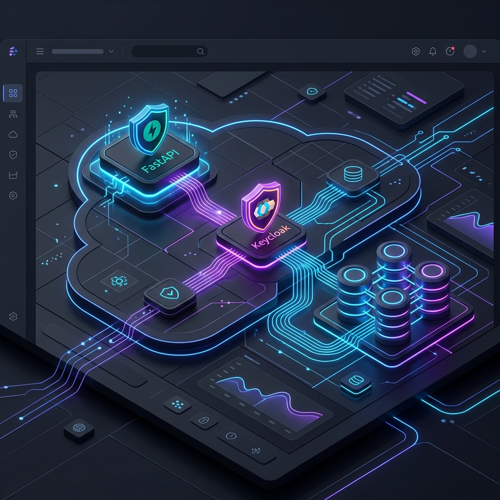

The Core Vision
Managing enterprise training workflows requires high security, granular permissions, and automated processes. CENRIXA solves this with a unified Backend-as-a-Service approach.
- Secure Foundation
- Automated Workflows
- Granular Access
A State-of-the-Art BAAS Implementation
Managing enterprise training workflows requires high security, granular permissions, and automated processes. CENRIXA solves this with a unified Backend-as-a-Service approach.

Keycloak is the heart of CENRIXA's security. It's more than just a login; it's an enterprise-grade identity layer.
Centralized user storage and lifecycle management without manual user-table scaling.
Business logic stays clean while Keycloak handles MFA, Social Login, and Passwords.
Easily bridge existing LDAP or Microsoft AD services into the training portal.
@require_permission("training:access")
async def get_portal_data():
return await service.fetch()
Our custom RBAC system integrates directly with Keycloak roles to provide granular command-level authorization.
Defined by policies, enforced by code.
The TaskFlow system automates the training lifecycle from onboarding to certification.
CENRIXA is built for the future of enterprise training—secure, automated, and professional.